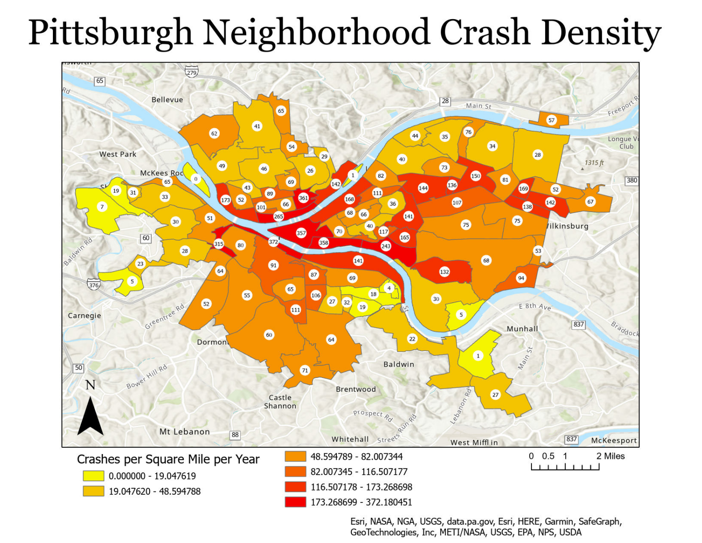
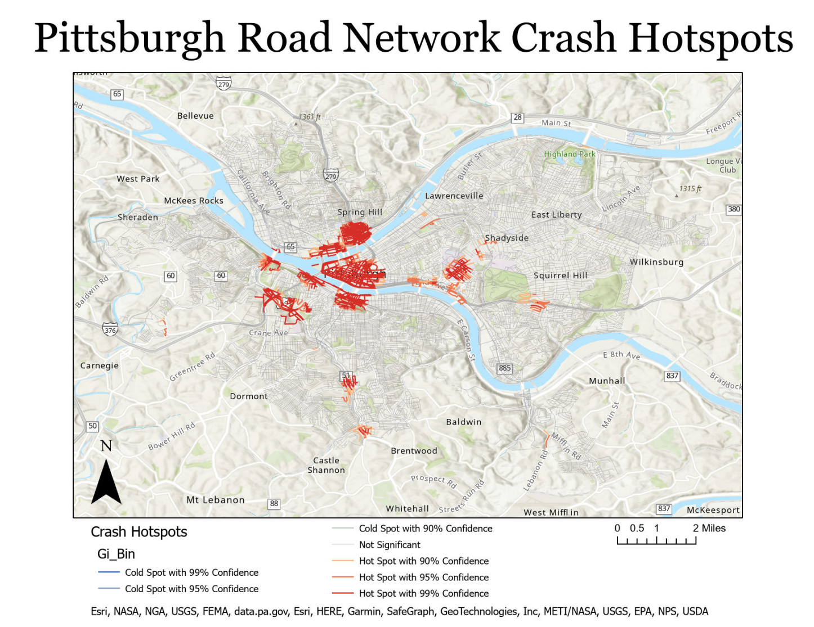

Crash Analysis Project
Using nineteen years of PennDOT crash data to perform network hotspot analysis on the Pittsburgh road network in ArcGIS Pro.
In 2021, over 42,000 people were killed and 2.5 million were injured on U.S. roadways (U.S. Department of Transportation). In order to increase the safety of our roadways, it is necessary to understand the spatial distribution of crashes. Knowledge of this distribution allows authorities to make informed decisions about infrastructure, legislation, and law enforcement.
A basic way to explore the relative occurance of crashes in a city is to associate the crash point data with neighborhood polygons. This method is relatively simple, yet gives us a sense of which areas of the city have the most dangerous roads. For example, the following map shows that more crashes occur per square mile per year in the Central Business District and its adjacent riverside neighborhoods than in other parts of the city.
Although polygonal association of the crash data is a useful exploratory method, it has limitations. Most importantly, it does not tell us which specific roads and intersections are the most dangerous. This can be addressed by employing a more complicated method called network hotspot analysis. This method divides the road network into segments, associates each crash point with a road segement, and then performs a statistical analysis to indentify which segments of the road network have significantly more crashes than the rest of the network.
In the future I would like to revisit this project and publish the results as an interactive web map rather than in static images. A challenging aspect I would like to address is how best to account for the verticality of the road network, especially where roads pass over each other, which could affect the results of the analysis.